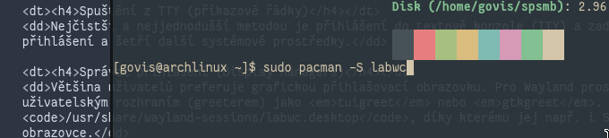

Cíl kapitoly: Popsat proces instalace z repozitářů běžných linuxových distribucí a možnosti startu grafické relace.
Labwc je moderní software s aktivním vývojem, který se v posledních dvou letech stal standardní součástí oficiálních repozitářů mnoha linuxových distribucí. Jeho kompilace a instalace je tak zpravidla otázkou jednoho příkazu.

Pro instalaci v oblíbených distribucích stačí použít základního správce balíčků. Například:
sudo pacman -S labwc (K dispozici v oficiálním extra repozitáři)sudo apt install labwc (Ve stabilních repozitářích u novějších verzí)sudo dnf install labwclabwc. Tento přístup nevyžaduje žádného správce přihlášení a šetří další systémové prostředky./usr/share/wayland-sessions/labwc.desktop, díky kterému jej např. i SDDM nebo GDM automaticky detekuje a nabídne v rozevíracím menu na zamykací obrazovce.Vzhledem k tomu, že ještě ne všechny aplikace podporují nativní běh na Waylandu (často se to týká některých her nebo proprietárního softwaru), doporučuje se při instalaci přidat i balíček XWayland. Ten běží transparentně na pozadí jako samostatný X11 server uvnitř Labwc a umožňuje bezproblémové vykreslování starších programů.